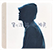
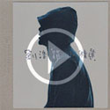
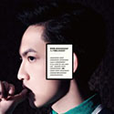
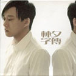
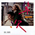
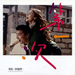
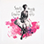
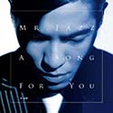

歌曲分享
刘浩龙 – 小精选

近年转战电影圈的刘浩龙，2012年回归他的歌唱事业
5月刚在香港艺术中心寿臣剧院举行两场《刘浩龙小音乐会》
还发行新曲+精选《小精选》。
碟内共收录12首精选歌和四首新歌
见证了“师兄”八年来的音乐成长路。
近年转战电影圈的刘浩龙，2012年回归他的歌唱事业
5月刚在香港艺术中心寿臣剧院举行两场《刘浩龙小音乐会》
还发行新曲+精选《小精选》。
碟内共收录12首精选歌和四首新歌
见证了“师兄”八年来的音乐成长路。
林宥嘉 – 大小说家

这张最新专辑以一部十个章节（歌曲）组成的“音乐小说”为概念
林宥嘉更亲力参与幕后制作的每个环节。
由陈珊妮担任制作人的首波主打“思凡”
融合了摇滚与电子、七十年代disco与八十年代新浪潮，
这张最新专辑以一部十个章节（歌曲）组成的“音乐小说”为概念
林宥嘉更亲力参与幕后制作的每个环节。
由陈珊妮担任制作人的首波主打“思凡”
融合了摇滚与电子、七十年代disco与八十年代新浪潮，
 合辑 – 林夕字传
合辑 – 林夕字传

由林夕亲自挑选至爱词作
并由林若宁点评 分享背后的故事
3CD限量精美豪华包装 DSD重新编制
由林夕亲自挑选至爱词作
并由林若宁点评 分享背后的故事
3CD限量精美豪华包装 DSD重新编制
黄英 – 灿烂的行走
凭借与生俱来的高亢嗓音和清澈音色 独有的“英式唱腔”
回归大自然的黄英兴奋地仿佛一个孩子
和煦的阳光下 一袭纯白色衬衫的黄英回眸莞尔一笑
弱的外表下掩藏着摄人心魄的光芒
一望无垠的金色田野犹如黄英独树一帜的音乐风格 自然大气
第一次 电影原声带

我们的初恋共鸣
Angelababy/赵又廷/江珊/袁咏琳 领衔主演
“第一次”电影原声带
我们的初恋共鸣
Angelababy/赵又廷/江珊/袁咏琳 领衔主演
“第一次”电影原声带
辛晓琪 – 遇见快乐
林忆莲 MMXI演唱会
乐坛天后林忆莲继 Live 07 后再次为乐迷带来耳目一新的表演
林忆莲MMXI演唱会》于2011年9月23至25日在香港红馆举行
把她1985年出道至今的歌曲重新编排 加入新的演唱元素及形式
让在场观众有不一样的体会及感动
范玮琪 – 爱,在一起
萧敬腾 – Mr.JAZZ

Mr. JAZZ vs. Mr. Rock
25岁，萧敬腾的精神年。所以他用直觉做分享
不论是演唱会上Mr. Rock的狂放摇滚
还是爵士之夜Mr. Jazz的静谧温润
都是萧敬腾直觉式分享的一部份
Mr. JAZZ vs. Mr. Rock
25岁，萧敬腾的精神年。所以他用直觉做分享
不论是演唱会上Mr. Rock的狂放摇滚
还是爵士之夜Mr. Jazz的静谧温润
都是萧敬腾直觉式分享的一部份
JS – 听见